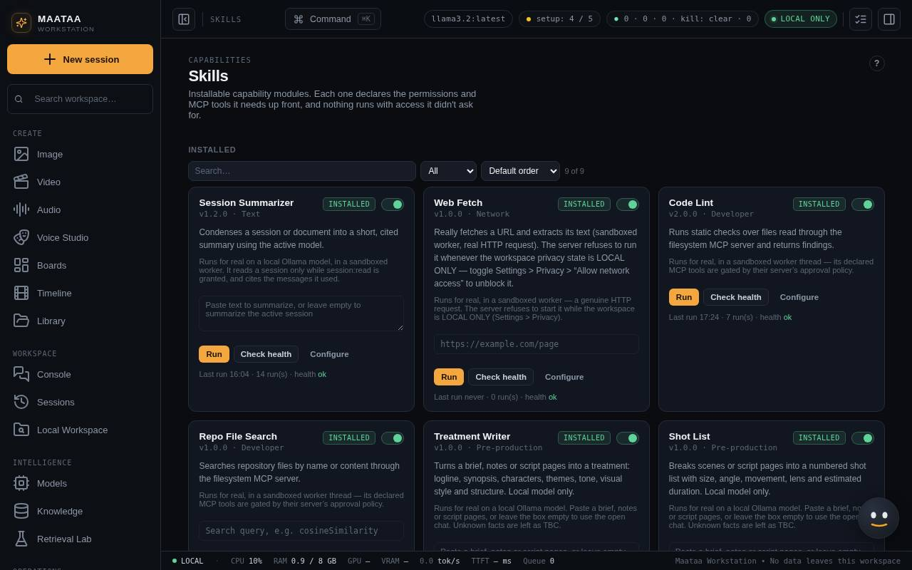

Skills
Sandboxed tools that do one job well — pre-production writers, Translate, Slides, the Summarizer and developer tools — each with a history of its outputs.
A skill is a small tool with declared inputs, outputs and permissions. It runs in a sandbox and can use only the tool servers and permissions it declares. Skills can be run by hand, by an agent, or as a workflow step.

Skills that do real work
| Skill | What it does |
|---|---|
| Treatment Writer | A film treatment from a brief or notes |
| Shot List | A structured shot list (tables); writes TBC for facts not in the source |
| Call Sheet | A call sheet from a schedule or notes; addresses and hospital details stay TBC unless given |
| Translate | Pasted text or the open chat into another language (type it in Translate into, e.g. Hindi), keeping formatting, names and screenplay layout; up to about 12,000 characters per run |
| Export to Slides | A deck with speaker notes as Marp Markdown: Save deck.md, then open it with the Marp extension for VS Code or npx @marp-team/marp-cli deck.md --pptx |
| Session Summarizer | Condenses the open session or pasted text; every sentence cites the source messages; long input is summarised in parts, up to 200,000 characters |
| Code Lint, Repo File Search | Developer tools over an approved folder |
| Web Fetch | Fetches a URL you give it (needs network access on) |
Leave the input box empty to use the open chat. Each skill runs on a local Ollama model and refuses API or demo models where it needs a real one. Skills without a real implementation say so instead of pretending to run.
Before you enable a skill
- Read its permission list. A skill only gets what its declared tool calls and connected tool servers allow.
- Use its health check and a manual run before giving it to an agent.
- Review Execution History after use.
History
Every skill keeps a full History of its outputs on its card, newest first, with Copy and the library file for each. Outputs are also saved in ~/Documents/NOVA Library.
In workflows
A text skill takes the previous step's output as its input. A Translate step names its language in its label, for example "Translate to Hindi". See Workflows.